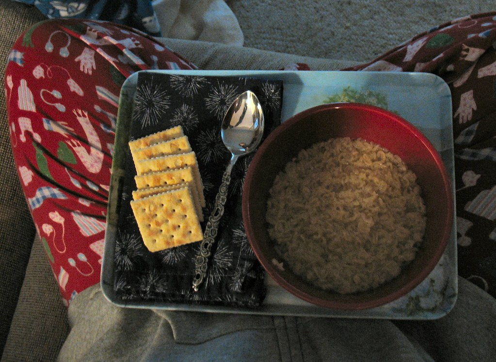

Back to Home
Soup and Crackers with Pepperoni and Cheese

Note: This image is from Google and does NOT represent the actual dish. LOL.
Description
Easy comfort food. Easy to scale down when I'm not feeling hungry.
Ingredients
- soup: Amazon fresh soup, or Rao's jars
- Ritz crackers (low sodium)
- cheese - Amazon cheddar block, or sandwich slices
- Hormel turkey pepperoni
- Baby carrots (5-6)
- milk
Steps
- Heat up soup in pot on stove. Heat = 2?
- Pour milk early so it's not too cold.
- Cut up or tear cheese into single-cracker size
- Spread out pepperoni into single layer and microwave for 50-60 seconds.
- Add baby carrots to plate.
Back to Home